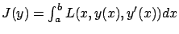
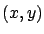
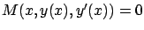
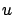
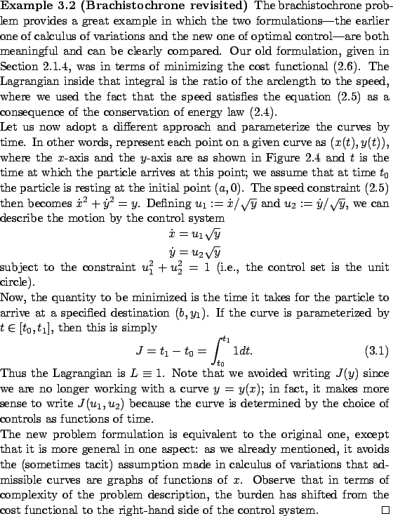
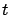
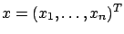
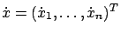
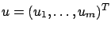

Problems in calculus of variations that we have treated so far are concerned with minimizing a cost functional of the form

over a given family of curves
-space and ``drawing a trace" of its motion. The choice of the slope![[*]](crossref.gif) and ).
and ).
In realistic scenarios, not all velocities may be feasible everywhere. In calculus of variations, constraints on available velocities may be modeled as equalities of the form

. We already know from Section 2.5.2 that if we solve such a constraint for
, we arrive at a control systemThe set in which the controls take values might also be constrained by some practical considerations, such as inherent bounds on physical quantities (velocities, forces, and so on). In the optimal control formulation, such constraints are incorporated very naturally by working with an appropriate control set. In calculus of variations, on the other hand, they would make the description of the space of admissible curves quite cumbersome.
Finally, once we adopt the dynamic viewpoint of a moving particle,
it is natural to consider another transformation which we already
encountered in Section 2.4.3. Namely, it makes
sense to parameterize the curves by time rather than
by the spatial variable  . Besides being more intuitive,
this new formulation is also more descriptive because it allows us to distinguish
between two geometrically identical curves traversed with different
speeds. In addition, the curves no longer need to be graphs of single-valued
functions of
. Besides being more intuitive,
this new formulation is also more descriptive because it allows us to distinguish
between two geometrically identical curves traversed with different
speeds. In addition, the curves no longer need to be graphs of single-valued
functions of  .
.

From this point onward, we will start using

as the independent variable. We will write
for the (dependent) state variables,
for their time derivatives, and
for the controls. The controls will take values in some control set, such as the unit circle in the above example. Of course, the simplicity of the Lagrangian in (3.17) is due to the fact that the cost being minimized is the time (this is a time-optimal control problem); in general, both the control system and the cost functional may be complex.